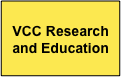

The Research and Education Liaison will expose and share researcher’s knowledge, methodologies and expertise and is carried out by the Virtual Compentency Centre 2 (VCC2).
Goals and scope
The VCC Research and Education Liaison aims to promote and support the use of research data and ICT methods and technologies, including the DARIAH infrastructure. It will act as the primary contact with the A+H research and teaching communities, providing the interface between the DARIAH research infrastructure and researchers undertaking basic, applied and practice‐led research across the A+H. It will seek to understand A+H research practices and processes, and to understand and promote the use and application of ICT‐enabled methods and tools, with a particular emphasis on interdisciplinary understanding and exchange.
VCC2 will encourage, support and enable research actors to use DARIAH tools and services in their research to assist them in asking new questions and to address old questions in new ways through the use of research data and the application of ICT methods. In so doing, it aims to address a range of people and interests, from established researchers to post‐graduates to students, as well as different disciplines and domains within and outside of higher education.
In addition to the essential support services for designing and promoting the DARIAH infrastructure, and among other key concepts and components, this VCC contributes a knowledge base which captures and links A+H methods, tools, and projects, and references digital humanities curricula.
Understanding Research Practices
The A+H community needs to understand the changing nature of research practices in the digital environment. This VCC aims to capture the ongoing changes in research practices, and to support researchers to share expertise and knowledge in digital methods and practices. Specific actions under this task are:
Collaborate with NeDimah to identify research groups using ICT methods, tools and services and seek to understand their research, teaching, and learning practices and processes
In collaboration with NeDimah, support researchers to share and exchange their expertise (e.g. methods, tools), building on an ontology of methods and a registry of tools as a reference for users of ICT methods
Develop a projects registry and case studies illustrating the use of ICT content and methods; information on expertise centres and groups
Translate these practices and processes into specifications for upgrading and improving DARIAH services and systems
Training and Education Programme
This VCC will provide a training programme for researchers in the methods, tools, and approaches needed to engage with the digital environment, including DARIAH services, tools, and content. Services will include:
DARIAH Summer School Programme
Online training and documentation to enable researchers to experiment with real life data and tools built/facilitated by VCC1
Collaborate with institutions providing undergraduate and postgraduate training in the digital humanities to embed DARIAH tools and services in their courses
Registry of undergraduate and post-graduate courses in addition to facilitating activities to share curriculum
Community Engagement
Engagement with digital tools, methods and content is an emerging practice fora majority of A+H research practitioners. The best method of promoting engagement and increasing uptake of the large volume of research data being digitised across Europe and elsewhere,and in turn the research infrastructures designed to support the creation and use of this research data, is to support communities of researchers in coming together to learn from each other and express their needs and requirements. Services to this end will include:
- Expert seminars
- A workshop series
- A publication and working paper serie
Since nearly every research project requires an amalgamation of specific types of scholarly data in combination with generic or specific tools for data querying, enrichment, and exploration, it is of utmost importance to provide facilities for the definition and implementation of a virtual research environment (VRE). Such environments are constructed upon the technical means provided by the e.infrastructure and based on a closed collaboration between scientists. Indeed, community engagement projects are of seminal importance in identifying possible reference VREs which can be further offered to a variety of research communities. VCC2 will contribute to the building of DARIAH’s VRE through:
- Targeted end user-surveys
- Feedback gathered as part of the outreach and training programmes
- Focus groups in consultation with VCC1 as appropriate
- Knowledge gained through collaboration with NeDimah on DH methods and tools
For further information please contact our VCC heads Susan Schreibman and Erik Ckampion.